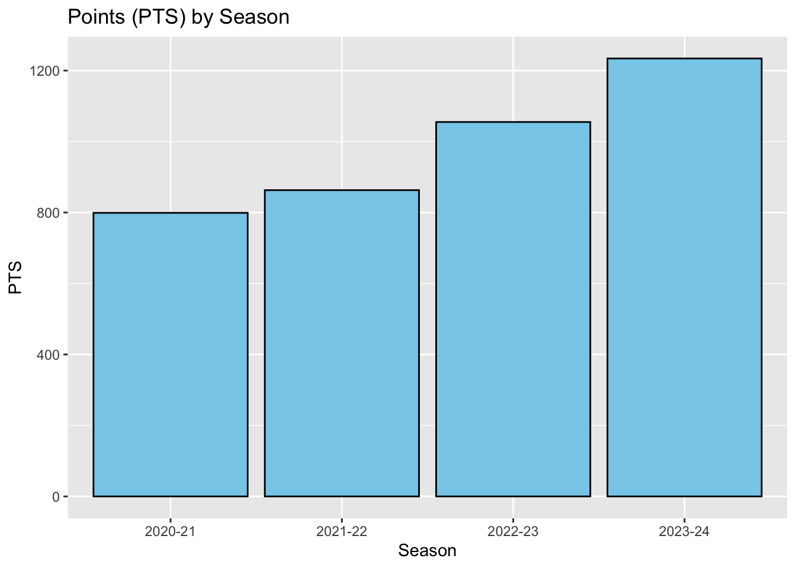

library(tidyverse)
library(readr)
library(here)
library(rvest)
#Iowa
url2 <- "https://www.espn.com/womens-college-basketball/team/stats/_/id/2294/iowa-hawkeyes"
h2 <- read_html(url2)
tab2 <- h2 |> html_nodes("table")
#stats with no names
iowa_df <- tab2[[4]] |> html_table(fill = TRUE)
#names table
iowa_df2 <- tab2[[3]] |> html_table(fill = TRUE)
iowa_stats <- bind_cols(iowa_df2, iowa_df)
#South Carolina
url3 <- "https://www.espn.com/womens-college-basketball/team/stats/_/id/2579/south-carolina-gamecocks"
h3 <- read_html(url3)
tab3 <- h3 |> html_nodes("table")
#stats with no names
sc_df <- tab3[[4]] |> html_table(fill = TRUE)
#names table
sc_df2 <- tab3[[3]] |> html_table(fill = TRUE)
sc_stats <- bind_cols(sc_df2, sc_df)Women’s college basketball has been on the more popular side for women’s sports. This year (2024), viewership hit an all time high and history was made. Findings of this report include pointing out Caitlin Clark as a true outlier, one of the best of all time, and someone who will be interesting to study as she moves onto her career in the WNBA. RElevant data includes season total data from both chapionship teams, and historical season total Caitlin Clark data through all 4 years of her being on the Iowa Hawkeyes.
The data sets above are season total statistics for the 2024 women’s NCAA basketball teams the Iowa Hawkeyes and the South Carolina Gamecocks, and was scraped from the ESPN website for women’s NCAA basketball.
The Iowa data set has 14 rows and 16 columns, and the South Carolina data set has 12 rows and 16 columns. The rows are each player plus an extra row for total for the team in both sets, and the columns are the same in both sets as follows.
These data sets includes variables:
Name: Name of the player
MIN: Minutes Played
FGM: Field Goals Made
FGA: Field Goals Attempted
FTM: Free Throws Made
FTA: Free Throws Attempted
3PM: 3-Pointers Made
3PA: 3-Pointers Attempted
PTS: Points
OR: Offensive Rebounds
DR: Defensive Rebounds
REB: Rebounds (Offensive and Defensive Total)
AST: Assists
TO: Turnovers
STL: Steals
BLK: Blocks
Question of Interest: The South Carolina Gamecock’s won the NCAA D1 Women’s Basketball Championship this year(2024), against the Iowa Hawkeyes. For the 2024 Season, I want to compare total season stats for both Iowa and South Carolina, see who their top players are, and just from some basic comparisons which team should’ve won the Championship. Other questions will also come up along the way.
First, let’s compare average points between the teams. Initially, we can see that Iowa has more players on their team than South Carolina. To prevent comparing inaccurate/fair numbers, we will only look at the top 7 players with the most time (MIN) on the court from each team to try to compare only the starters. I chose the number 7 because their are 5 players on the court at once, and probably 1 or 2 regularly subbed in players.
library(pander)
summary_iowa <- iowa_stats |>
arrange(desc(MIN)) |>
slice(1:7) |>
summarize(points_avg = mean(PTS))
summary_south_carolina <- sc_stats |>
arrange(desc(MIN)) |>
slice(1:7) |>
summarize(points_avg = mean(PTS))
combined_summary <- bind_rows(
mutate(summary_iowa, Team = "Iowa"),
mutate(summary_south_carolina, Team = "South Carolina")) |>
pander()From this table, we see that out of the starters and possible subs, Iowa has 60.2 more points on average for the season than South Carolina. Let’s see the breakdown of scorers on each team.
(Instead of looking at top 7 players by Minute, we will just look at all the players on each team to get a better comparison as a whole and also since there are no averages being taken.)
library(plotly)
sc_ppg <- sc_stats |> select(Name, PTS) |>
arrange(desc(PTS))|>
slice(2:12) |>
mutate(Name = fct_reorder(Name, PTS))
sc_plot1 <- ggplot(data = sc_ppg, aes(x = Name,
y = PTS,
label = PTS)) +
ylim(0, 1400) +
geom_point(color = "black") +
geom_segment(aes(x = Name, xend = Name, y = 0, yend = PTS), color="red4") +
coord_flip() +
theme_minimal(base_size = 15) +
theme(plot.background = element_rect(fill = "grey1"),
axis.text = element_text(colour = "red3", size = rel(1)))
ggplotly(sc_plot1, tooltip = "label")iowa_ppg <- iowa_stats |> select(Name, PTS) |>
arrange(desc(PTS))|>
slice(2:13) |>
mutate(Name = fct_reorder(Name, PTS))
iowa_plot1 <- ggplot(data = iowa_ppg, aes(x = Name,
y = PTS,
label = PTS)) +
geom_point(color = "black") +
geom_segment(aes(x = Name, xend = Name, y = 0, yend = PTS), color="yellow") +
coord_flip() +
theme(plot.background = element_rect(fill = "grey1"),
axis.text = element_text(colour = "yellow", size = rel(1)))
ggplotly(iowa_plot1, tooltip = "label")From analyzing these two plots, we see something really interesting. Right off the bat, we see that as a team, South Carolina looks like it has more even scoring between players, with a smooth decreasing trend from the top scorer. Iowa on the other hand, seems to have an outlier right at the top. Caitlin Clark(1234) has 724 more points than the next best scorer on her team(510), and that is more points than the top scorer on South Carolina has total(474), and the top two scorers on South Carolina combined. Caitlin Clark is an obvious outlier here even looking at both teams.
This conclusion came to fruition during the NCAA Championship game for Women’s basketball with South Carolina winning the game and Iowa coming in second for the tournament.
Pt. II
Has Caitlin Clark always been this good?
url4 <- "https://herhoopstats.com/stats/ncaa/player/caitlin-clark-stats-11eb2f34-a838-c400-aa81-12df17ae4e1e/"
h4 <- read_html(url4)
tab4 <- h4 |> html_nodes("table")
length(tab4)[1] 15clark_df <- tab4[[2]] |> html_table(fill = TRUE)
##asked chat GPT how to get rid of commas within character argument so I can turn it into an INT without it making them NA values, it told me to use gsub()
clark_df$PTS <- gsub(",", "", clark_df$PTS)
# convert to integer from character
clark_df$PTS <- as.integer(clark_df$PTS)This data is on Caitlin Clarks historical data throughout the yearrs with a similar layout ats the sets used above. The new data set is from the herhoopstatscom page, I had to use this website because I originally used the ESPN website but since Clark was drafted to the WNBA after I started doing this project, the website had since been changed and the table stats I was using before are no longer there.
This data set includes variables such as:
season: The year of the season played
team: The team she was playing for
G/GS: Games played
MIN: Minutes played
PTS: Points
FGM: Field goals made
FGA: Field goals attempted
FG%: Field goal percentage
2PM: 2-pointers made
TOV: Turnovers
There are more, but they are irrelevant for what I’m focusing on
ggplot(clark_df, aes(x = season, y = PTS)) +
geom_bar(stat = "identity", fill = "skyblue", color = "black") +
labs(title = "Points (PTS) by Season", x = "Season", y = "PTS") 
Through these examinations, we see an overall trend of Caitlin increasing and getting better as years progress. An important thing to note though, is that her initial first year numbers are still well above normal scoring and she was extremely accomplished even after her first year on the team.
From the beginning to the end, I can confidently say that these two teams are something special and highly talented. Caitlin Clark has left a lasting impact on her program, the sport, and women’s sports in general. To answer my questions, I do believe Iowa deserved to win the National championship from a stats point of view, although Caitlin Clark was an outlier and may have skewed the numbers slightly in favor of Iowa, their second scorer also had more than the top scorer on South Carolina. Although the numbers on most of the comparisons where close, Iowa won that battle. To answer the question if Caitlin Clark has always been this good, I would say yes she has always been this good and opened a new door for the game and the level of it during the 2024 season. Scoring more than 500 points on a season means you are a good player. Caitlin scored 799 points her freshman year which is incredibly high and takes a lot of talent to do in one season. To end a final season with not only over 1000 points, but almost a thousand and a half points is an incredible feat and will be really hard to surpass, if possible, in years to come. Catilin left a lasting impact on the program, and the sport as a whole, and is really interesting to look into.
With more time, I would 100% explore how Iowa performs without Caitlin Clark either by removing her from the data set or waiting a year for this coming season’s data since she is now in the WNBA. Some limitations of my visuals are that bar plot is slightly basic, but comparison wise I feel it does a good straightforward job at making it easy to see progress through time. Also quick to note is the scale on the South Carolina top scorers lolipop plot, I changed the axis so it matched the axis of the Iowa plot, originally it seemed like South Carolina was a much better team with a lower scale.